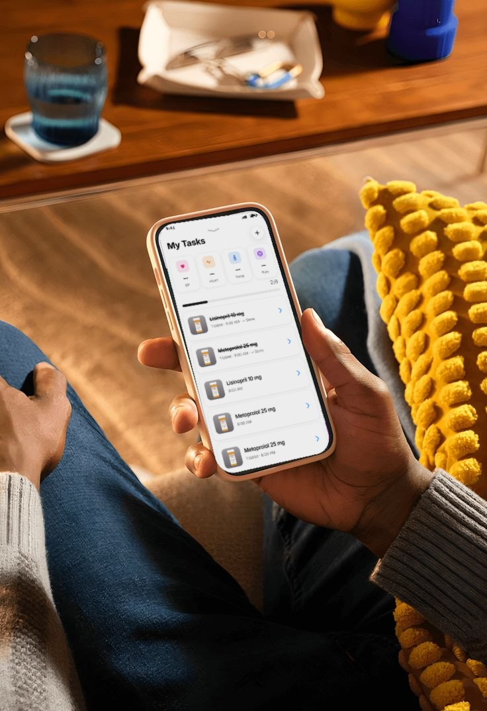

← Back to AdltrackCHECK-INSHow today went.
For everyone.
Doses, vital signs, notes and photos land in one daily report, so family far away knows how the day is going.

TODAY’S REPORT, SHAREDTHE DAILY REPORT
Every dose.
Every vital sign.
Every note.
Each entry goes into today’s report with its time: what was given, what was skipped, blood pressure, temperature and how lunch went.
Photos from the day have their own tab, and you can print the report to take to the next visit.
IF SOMETHING HAPPENSReport it once.
Everyone knows.
A fall or a bad reaction can be reported with the time, who was told, the witnesses and photos. The whole team is alerted straight away.